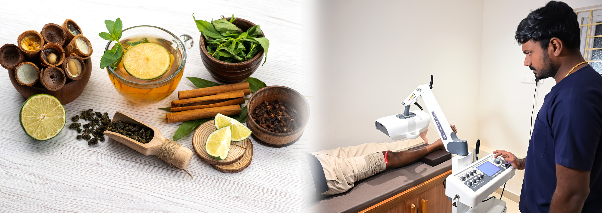

Integrating Photo Bio Modulation Therapy with Ayurveda in Aathithya Wellness Center & Clinic
A Gentle, Modern Solution for Pain Relief & Healing



Ancient Wisdom Meets Modern Healing Technology
At Aathithya Wellness Center & Wellness Clinic, we combine the timeless healing science of Ayurveda with safe, modern Photo Biomodulation Therapy (PBMT) to support faster, deeper, and more comfortable healing.
This integrated approach respects traditional Ayurvedic principles while embracing advanced, non-invasive technology—helping the body activate its own natural healing intelligence.
What is Ayurveda?
Healing by Restoring Balance
Ayurveda, known as the “Science of Life,” focuses on restoring balance within the body and mind by harmonizing:
- Doshas – Vata, Pitta, Kapha
- Dhatus – body tissues
- Agni – digestion and metabolism
- Ojas – immunity, vitality, and mental strength
Ayurvedic healing works through:
- Proper diet (Ahara)
- Healthy lifestyle (Vihara)
- Herbal medicines (Aushadhi)
- Therapies such as Abhyanga, Panchakarma, Vasti, Nasya, and more
What is Photo Bio Modulation Therapy (PBMT)?
Photo Bio Modulation Therapy (PBMT) is a modern, non-invasive, drug-free therapy that uses gentle therapeutic light to stimulate cellular healing.
PBMT helps the body by:
- Improving cellular energy
- Reducing inflammation
- Enhancing blood circulation
- Calming nerves
- Accelerating tissue repair

PBMT Through the Lens of Ayurveda
In Ayurvedic understanding, PBMT works in harmony with:
- Agni & Tejas – activating the inner healing fire
- Prana – improving life energy flow
- Ojas – strengthening immunity and vitality
PBMT does not oppose Ayurveda—it supports and strengthens Ayurvedic healing.
Benefits of Integrated Ayurveda + PBMT
- Faster reduction of inflammation
- Quicker pain relief
- Deeper healing response
- Shorter recovery time
- More visible and lasting results
This integration makes treatment more comfortable for patients and more effective overall.
Why Combining PBMT with Ayurveda Makes Healing Faster
Ayurveda teaches: All diseases begin when Agni (inner fire) becomes weak. PBMT gently activates this inner fire at a cellular level, allowing the body to respond more effectively to Ayurvedic treatments.
Book your Photo Bio Modulation Therapy session todayIntegrating Photo Bio Modulation Therapy with Siddha Medicines
Siddha medicine emphasizes harmony between body, mind, and environment, using natural herbs, minerals, and lifestyle practices. PBMT complements Siddha treatment by enhancing circulation, reducing inflammation, and promoting faster tissue repair.
At Aathitya Wellness Centre, PBMT is carefully integrated with Siddha medicines under the supervision of our experienced Siddha physician ensuring treatments are aligned with traditional principles and modern safety standards.
Safe, Gentle & Patient-Friendly Healing
PBMT is:
- Non-invasive (no surgery, no needles)
- Drug-free
- Painless
- No known side effects
- Safe for all age groups
PBMT blends seamlessly with traditional Ayurvedic therapies such as:
- Abhyanga (oil massage)
- Panchakarma
- Vasti & Nasya
- Herbal medicines
- External applications (Lepana)
How PBMT Enhances Ayurvedic Treatments
Improves the Effectiveness of Ayurvedic Medicines
PBMT enhances circulation and cellular absorption, helping medicines work faster and deeper.
Examples:- Herbal decoctions + PBMT → faster reduction in pain and swelling
- Oil massage + PBMT → improved blood flow and muscle relaxation
- Rasayana therapy + PBMT → enhanced tissue rejuvenation
Supports Panchakarma & Detox Therapies
PBMT prepares the body for cleansing by:
- Reducing inflammation
- Improving tissue responsiveness
- Supporting detox pathways
This makes Panchakarma therapies more comfortable and effective.
Effective for Modern Lifestyle Disorders
The integrated approach is highly beneficial for:
- Diabetes, Blood pressure issues, Stress & anxiety
- Obesity, Chronic pain, Arthritis
- Nerve pain, Sleep disorders, Infertility & hormonal imbalance
Faster Results, Greater Patient Confidence
Patients often experience:
- Faster relief in chronic conditions
- Reduced dependence on painkillers
- Better comfort during treatment
This makes Panchakarma therapies more comfortable and effective.
Our Commitment at Aathitya Wellness Centre
At Aathitya Wellness Centre, we believe that informed patients feel safer and heal better. With experienced doctors in Siddha, Ayurveda, and Homeopathy, combined with advanced Photobiomodulation Therapy, we are committed to offering integrated care that prioritizes health, comfort, safety, and trust.


The most popular questions to discuss Wellness
Yes. PBMT is clinically researched, non-invasive, and safe when administered by trained professionals.
No. The therapy is painless and does not cause burning or discomfort.
The number of sessions depends on the condition, severity, and individual response. Our experts will guide you.
People with pain, inflammation, joint issues, muscle problems, nerve pain, fatigue, and those seeking wellness can benefit.
PBMT has no known serious side effects when used correctly.